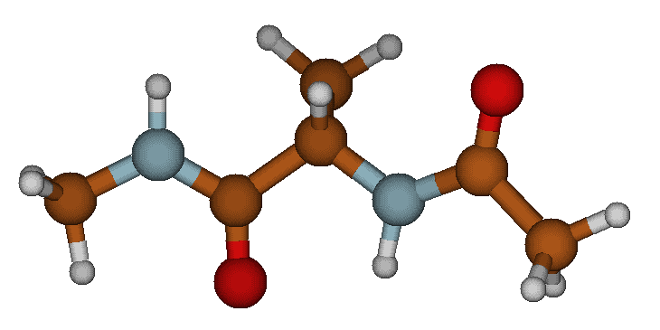
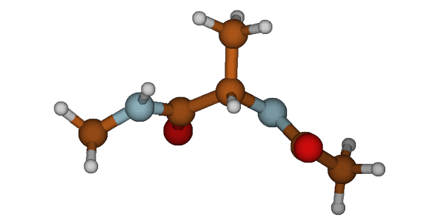
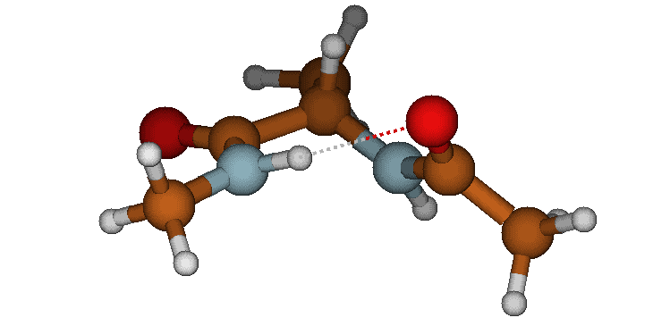

Automated Kinetic State Discovery with PySoftK
This tutorial demonstrates how to process a raw Molecular Dynamics trajectory (e.g., from xTB), automatically identify the molecular backbone, filter out thermal noise, and cluster the distinct kinetic states using tICA and HDBSCAN. Finally, we will mathematically analyze and interactively visualize the discovered conformations.
Prerequisites
Make sure you have installed PySoftK and its dependencies. If you are running this in a Jupyter Notebook or Google Colab, you can install it directly:
git clone https://github.com/alejandrosantanabonilla/pysoftk
cd pysoftk
pip install .
pip install py3Dmol MDAnalysis
Step 1: Define Data Paths
For this tutorial, the required trajectory (xtb.xyz) and topology (topology.pdb) of Alanine Dipeptide are located in the topologies_tutorials/data/ folder of the repository.
import os
data_dir = "topologies_tutorials/data"
topology_file = os.path.join(data_dir, "topology.pdb")
trajectory_file = os.path.join(data_dir, "xtb.xyz")
output_conformers = os.path.join(data_dir, "representative_conformers.pdb")
if not os.path.exists(topology_file):
print(f"Warning: Could not find {topology_file}.")
else:
print(f"Topology found at: {topology_file}")
if not os.path.exists(trajectory_file):
print(f"Warning: Could not find {trajectory_file}.")
else:
print(f"Trajectory found at: {trajectory_file}")
Step 2: Run the Kinetic Clustering Pipeline
We will use PySoftK to automatically extract the dominant conformations.
from pysoftk.pol_analysis.kinetic_clustering import AutomatedKineticClustering
print("Loading trajectory data...")
app = AutomatedKineticClustering(topology_file, trajectory_file)
# Identify the structural core (Top 60% centrality, filtering out fast-moving hydrogens)
app.define_backbone_by_centrality(percentile=60)
# Build contact maps (4.5 Å cutoff for H-bonding in small peptides)
app.extract_contact_maps(r_cutoff=4.5)
# Project and cluster (Lag time of 5 frames)
embedding, labels = app.run_tica_clustering(lag_time_frames=5, n_components=2, min_cs=10)
# Save the physical frames closest to the cluster centers
app.export_representative_states(output_conformers)
Step 3: Mathematical Analysis of Discovered States
We can use MDAnalysis to measure the Ramachandran dihedral angles and the intramolecular hydrogen bond distance to classify the discovered states mathematically.
import numpy as np
import MDAnalysis as mda
from MDAnalysis.lib.distances import calc_dihedrals
print(f"--- Analyzing {output_conformers} ---")
u = mda.Universe(output_conformers)
# Atom indices for Alanine Dipeptide (0-based)
phi_indices = [4, 6, 8, 14] # C(ACE) - N - CA - C
psi_indices = [6, 8, 14, 16] # N - CA - C - N(NME)
o_idx, h_idx = 5, 17 # O(ACE) to H(NME) for H-Bond
for ts in u.trajectory:
# Extract coordinates
phi_coords = u.atoms[phi_indices].positions
psi_coords = u.atoms[psi_indices].positions
# Calculate Dihedrals and grab the raw float value using [0]
phi_angle = np.rad2deg(calc_dihedrals(*phi_coords))[0]
psi_angle = np.rad2deg(calc_dihedrals(*psi_coords))[0]
# Calculate H-Bond Distance
hbond_dist = np.linalg.norm(u.atoms[o_idx].position - u.atoms[h_idx].position)
# Classify state based on precise xTB Ramachandran boundaries
if hbond_dist < 2.5:
state_name = "Alpha-Helix (aR / C7eq)"
elif phi_angle < -130 and psi_angle > 100:
state_name = "Beta-Sheet (C5)"
else:
state_name = "Polyproline II (PII)"
print(f"State {ts.frame + 1}: {state_name}")
print(f" -> Phi (φ): {phi_angle:.1f}°")
print(f" -> Psi (ψ): {psi_angle:.1f}°")
print(f" -> O-H Distance: {hbond_dist:.2f} Å\n")
Step 4: The Three Discovered Phases
The algorithm successfully isolates three physically distinct metastable states from the trajectory. Below are the structural representations of these kinetic basins:
1. The Beta-Sheet (C5) State This is the fully extended conformation where the backbone is stretched out. The oxygen on the acetyl group and the hydrogen on the N-methyl group point in opposite directions, preventing any intramolecular hydrogen bonding.
{kind=link}

The extended Beta-Sheet (C5) conformation.
2. The Polyproline II (PII) State Similar to the beta-sheet, the psi angle is highly extended, but the phi angle has twisted significantly inward. This twisted-extended state is a signature, highly-populated basin for unfolded peptides.
{kind=link}

The twisted Polyproline II (PII) conformation.
3. The Alpha-Helix (aR / C7eq) State The molecule curls back on itself to form a closed ring. This state is locked into place by a strong, ~2.0 Å intramolecular hydrogen bond between the Acetyl oxygen and the N-methylamide hydrogen.
{kind=link}

The folded Alpha-Helix (aR / C7eq) conformation featuring a strong intramolecular hydrogen bond.
Step 5: Interactive 3D Visualization
Finally, use py3Dmol to load the generated PDB file and visualize the folding transitions right in your Jupyter environment.
import py3Dmol
print(f"--- Visualizing {output_conformers} ---")
# Read the generated PDB file containing our 3 states
with open(output_conformers, 'r') as f:
pdb_data = f.read()
# Initialize the 3D viewer
view = py3Dmol.view(width=800, height=400)
view.addModelsAsFrames(pdb_data)
# Style the molecule
view.setStyle({'stick': {'radius': 0.15}, 'sphere': {'radius': 0.4}})
# Animate through the states
view.animate({'loop': 'forward', 'step': 1000})
view.zoomTo()
view.show()